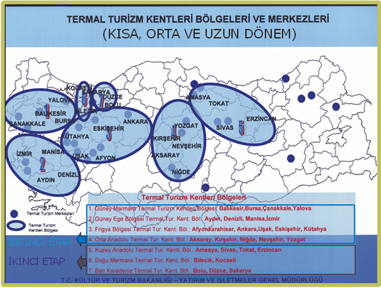

TÜRKİYEDE SAĞLIK TURİZMİNE YÖNELİK YAPILAN ÇALIŞMALAR VE ETKİNLİKLER
Sağlık Turizmi; medikal turizm, termal sağlık turizmi ve ileri yaş - engelli turizmi olmak üzere 3 alt bileşenden oluşmaktadır. Ülkemizde sağlık turizmi birçok kurum veya kuruluşun faaliyet alanında yer almakla birlikte rapor kapsamında sağlık turizminin 3 alt bileşenini temsilen Kültür ve Turizm Bakanlığı’nın termal turizm çalışmalarından, Sağlık Bakanlığının medikal turizm çalışmalarından ve Aile ve Sosyal Politikalar Bakanlığının ise İleri yaş ve engelli turizmi çalışmalarından bahsedilmesi amaçlanmaktadır.
Gelişmiş ülkelerde sosyal ve ekonomik gelişmelere paralel olarak değişen dönüşen dünya dinamikleri ile birlikte yaşam şekli ve kalitesine verilen önem hem artmakta, hem de farklılaşmaktadır. İnsan sağlının korunmasında, sağlıklı bir yaşam sürdürülmesinde doğal kaynakların kullanılması giderek daha fazla tercih edilmekte eski, basit ama sağlıklı yaşam tarzlarına büyük bir özlem duyulmaktadır. Bu noktada Türkiye uzun tarihi geçmişi, emsalsiz doğa ve iklimi ve zengin kültürü ve nihayet geleneksel kaplıca ve Türk Hamamı olgularının mevcudiyeti ile çağdaş sağlık ve termal turizm gelişmesinde çok iddialı olabilecek bir potansiyeli barındırmaktadır.
Türkiye’deki kaplıcalardan her yıl konaklamalı ve günübirlik olmak üzere 8.5 milyon civarında Türk vatandaşının yararlandığı tahmin edilmektedir. Ancak yapılan araştırmalar mevcut termal su kaynaklarının ancak %5 inin bir tesis vasıtasıyla kullanılabildiğini veya yatırıma dönüşebildiğini göstermektedir. Pek çok bölgemizde termal su kaynakları tesis yokluğu nedeniyle boşa akabilmekte, bazı tesislerde ise ihtiyaç dışı kullanılabilmekte, israf da söz konusu olabilmektedir.
Türkiye’de bulunan termal kaynakların etkin kullanımının sağlanması ve buna dayalı turizm gelişiminin desteklenmesi amacı ile Türkiye Turizm Stratejisi 2023 ve Eylem Planı 2007–2013 ana kararları kapsamında Bakanlığımızca hazırlanan Termal Turizm Master Planı’nı birinci etabı çerçevesinde 4 bölge oluşturulmuş ve bu bölgelerdeki deneyimlerle çalışma ikinci etabı ile Turizm Merkezleri ilan etmek ve bu alanların 1/25.000 ölçekli Çevre Düzeni Planlarını yapmak suretiyle tüm ülke bazında termal turizm potansiyeli değerlendirilmektedir.